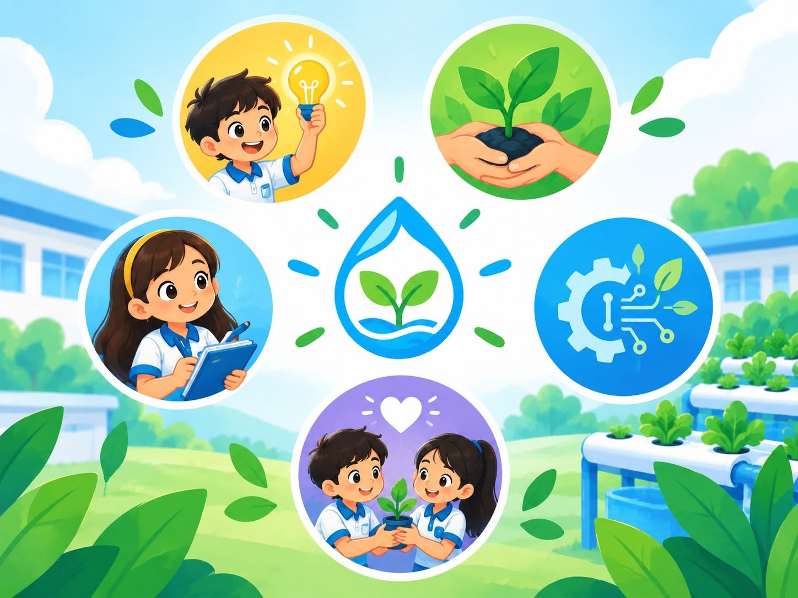
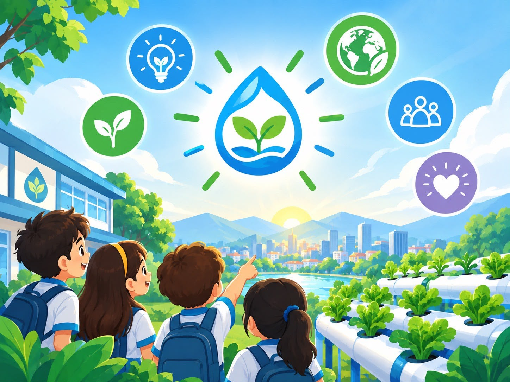
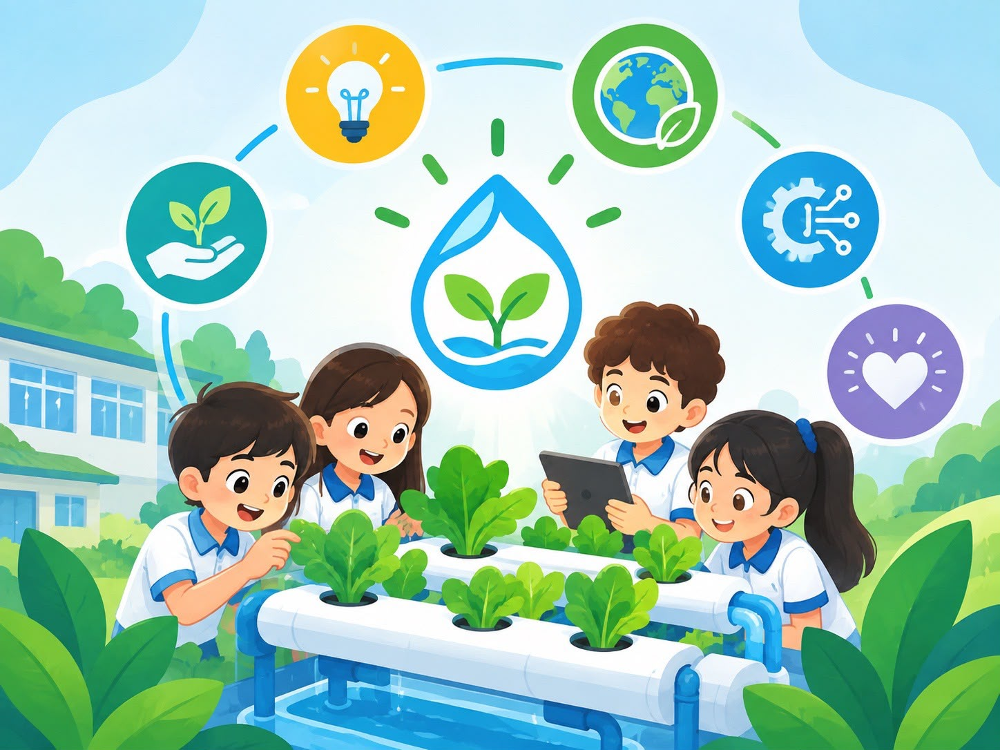
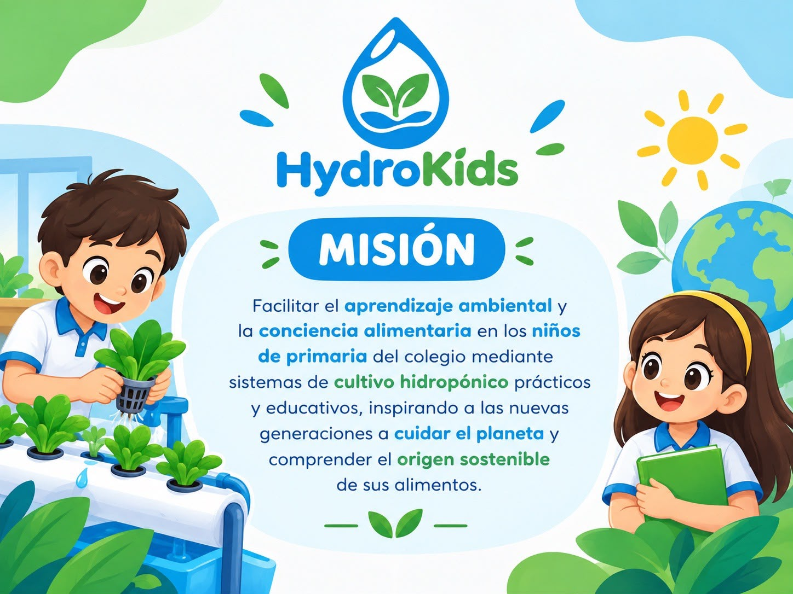
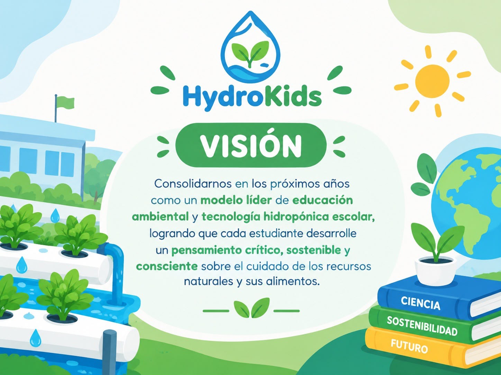
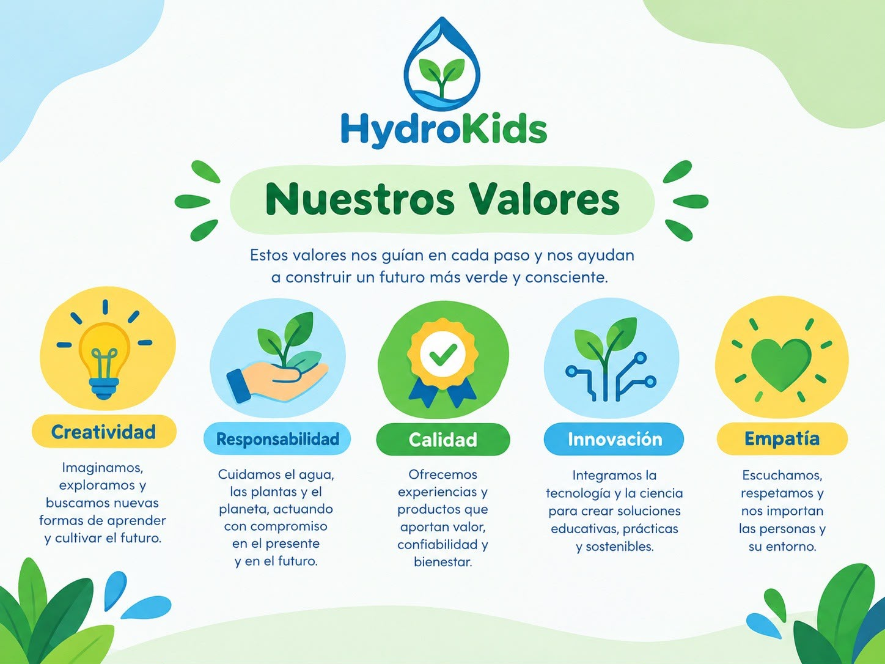

Pequeñas manos,
grandes cambios.
Un espacio para descubrir cómo crecen las plantas, aprender sobre el cuidado del agua y explorar la hidroponía de una forma práctica, divertida y sostenible.
Descubre nuestro proyecto →
¿Qué es HydroKids?
Aprender sobre el ambiente puede ser una aventura llena de descubrimientos.

Aprender haciendo
HydroKids es una propuesta educativa que busca acercar a los niños al aprendizaje ambiental y a la conciencia alimentaria mediante experiencias prácticas de cultivo hidropónico.
Queremos despertar la curiosidad, promover el trabajo en equipo y enseñar la importancia de cuidar el agua, las plantas y los recursos naturales.
Proyecto integrado
Unimos educación, tecnología y naturaleza para aprender a cultivar de manera responsable.
Aprendizaje ambiental
Facilitar el aprendizaje ambiental y la conciencia alimentaria en los niños mediante experiencias prácticas y educativas.
Conoce más →Hidroponía escolar
Explorar sistemas de cultivo hidropónico y comprender cómo pueden crecer las plantas sin utilizar suelo como medio de cultivo.
Conoce más →Ciencia e innovación
Estimular la curiosidad, la observación y la búsqueda de soluciones prácticas que ayuden a cuidar los recursos naturales.
Conoce más →
Nuestra esencia HydroKids
Descubre nuestra misión, nuestra visión y los valores que orientan nuestro proyecto.

Nuestra misión
Conoce nuestro propósito y lo que queremos aportar mediante la hidroponía.
Conocer nuestra misión →
Nuestra visión
Descubre nuestras metas y lo que esperamos alcanzar en el futuro.
Conocer nuestra visión →
Nuestros valores
Aprende sobre los principios que representan nuestra forma de trabajar.
Conocer nuestros valores →Nuestro producto
El cultivo hidropónico es una forma de cultivar plantas utilizando agua con nutrientes, sin depender del suelo como medio de cultivo.
Un cultivo que enseña
Con HydroKids, el cultivo se convierte en una experiencia educativa: los niños pueden observar el crecimiento de las plantas, conocer sus necesidades y reflexionar sobre el origen de los alimentos.
- Observar las etapas de crecimiento.
- Aprender sobre el uso responsable del agua.
- Reconocer la importancia de los nutrientes.
- Practicar la colaboración y la responsabilidad.
Galería HydroKids
Imágenes que representan nuestra identidad, propósito y experiencia de aprendizaje.
Contáctanos
¿Quieres conocer más sobre HydroKids? Escríbenos mediante el siguiente formulario.
¡Cultivemos ideas juntos!
Déjanos tus datos y escribe tu mensaje. Nos encantará conocer tus preguntas e ideas.